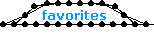
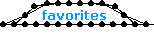

| 295 |
 |
name: Half_Rotors
genre: walker/motored
comments: One day I was fiddling around with some rotor designs and I wondered if a suitably reinforced linkage could be made into a 4pt rotor with only half the usual muscles. It turns out that it could be made and this walker is the first result. And the wave pallet looks highly unusual for a walker. |
| 135 |
 |
name: Hard_Shell
genre: walker
comments: This model is really unrelated to Soft_Shell but I thought it would be fun to give them opposing names. Creative model naming and placement is one of the things that can help get your models into the zoo. |
| 011 |
 |
name: Harmonic_Fluteworm
genre: snake
comments: This is my first snake model. The name is partially derived from the fact that one wave coursing through this model has twice the frequency of the other. The amount of muscles and the timing complexity made this my first programming challenge. |
| 121 |
 |
name: Hazard
genre: zero-g
comments: This model is a triangle version of my Flex_Effect that used squares. It reminded me of a flashing hazard sign that people set up on the side of the road. |
| 196 |
 |
name: Helios
genre: zero-g
comments: This is a gigantic and finely crafted Rotation Angle Motor (RAM) and is the best of my sun-based series of models. Personally I find the motion of these motors to be mesmerizing. I saved the proper Greek name for the model that I thought deserved it the most. |
| 177 |
 |
name: Helix_Walker
genre: walker
comments: I have always felt that helix shapes are among the most 3 dimensional appearing things that can be made in the constructor. Upon examining them one day I realized that they could easily be used to power legs just like in my Under_Carriage model. |
| 004 |
 |
name: Hermeneutic_Circle
genre: other/representational
comments: I wish I had been more skilled when I tried to visually represent section 32 "Understanding & Interpretation" from Martin Heidegger's "Being & Time." If you are familiar with that book, the theme is pretty straightforward. Ironically, my desire to revisit and remake this model speaks volumes about its subject matter. |
| 153 |
 |
name: Hexagram
genre: walker/motored
comments: I wish I had spent more time refining the appearance of this walker that was meant to showcase my new Linear_Hexagonal_Motor. I think the stride could be made much more efficient and I've never liked those wedge shaped legs. |
| 144 |
 |
name: Hexal
genre: zero-g
comments: Hexal was an incredible pain to construct and even worse to program. I had to pin it all stretched out with fixed masses just to select individual springs. On neat thing you can do with it is to delete masses and attempt to create a symmetrical snowflake pattern. |
| 069 |
 |
name: HexNutt
genre: amoeba/flex
comments: This is very similar to my PurpleHexagon_KevinoStyle except it uses supports that span longer distances and overlap each other more. It ended up looking like a hexagonal nut that fits on the end of a carriage bolt so I named it such. |
| 088 |
 |
name: High_Tide
genre: walker/motored
comments: The motor used here is a rather attractive linear combination. There are many possible configurations for these motors so they don't all deserve their own names. The model rides quite high and it reminds me of the clam diggers that scour the beaches near me. Of course, I didn't think Low_Tide was a particularly nice name. |
| 174 |
 |
name: High_Tower
genre: walker
comments: This model made the jump from Under_Carriage by using false linear motors. I have continued to use this method of offset timing ever since because it is usually produces very clean and sound walkers. Some people felt this model wasn't high enough for its name so they built extensions on the top. |
| 176 |
 |
name: Highness
genre: walker
comments: Highness uses one half of Space_Age upside down to power its array of legs. I felt that the rotating triangle shapes ended up looking like a crown on the top so that's where the name comes from. |
| 299 |
 |
name: HobGoblin_JeckyllStyle
genre: walker/motored
comments: One morning I saw a model in the zoo by Jeckyll. I immediately recognized that 3pt linear motors could be employed to power the mechanism so I deleted his motor and tried adding the current ones. It works basically the same way so I submitted it right away and credited Jeckyll. |
| 055 |
 |
name: Hollow_Point
genre: walker/flex
comments: This is the first result of my fascination with mono's old flex walkers. It has 3 legs per side so the programming was kind of new for me. The name comes from the fact that the legs are very pointy while the frame is hollow. But because of the type of bullet it ends up sounding like the title of an action movie. |
| 168 |
 |
name: Honeycomb
genre: walker/motored
comments: This model could be much more effective if the motors produced a larger pattern of elliptical motion. Also I probably should have attached the legs in parallel. In any case, the pulsing problem in this motor remained unfixed. |
| 289 |
 |
name: Hubcaps
genre: roller/motored
comments: This model uses the same wheels as Magenta and Porsche_Speedster because I liked the proportions very much. This simple compound linear combination is straight forward, but I like the effect of having the hubcaps spin in the opposite direction as the wheels. |
| 194 |
 |
name: Hyacinthus
genre: walker/motored
comments: This model uses one of my Angle_Ellipse_Motors. It is named for a youth who was struck by one of Apollo's discuses after it was blown off course by the jealous west wind. This model reminds me of the flower that was named for the mythical figure. |
| 103 |
 |
name: Hyperion
genre: other/flex
comments: To make Hyperion I had to branch out from the knowledge I gained while working on QuadriHelix_MonoStyle significantly. From the beginning I knew it would be a great looking model so I gave it a name I had been saving for a while. It is the name of the titan who fathered Helios. |


 
